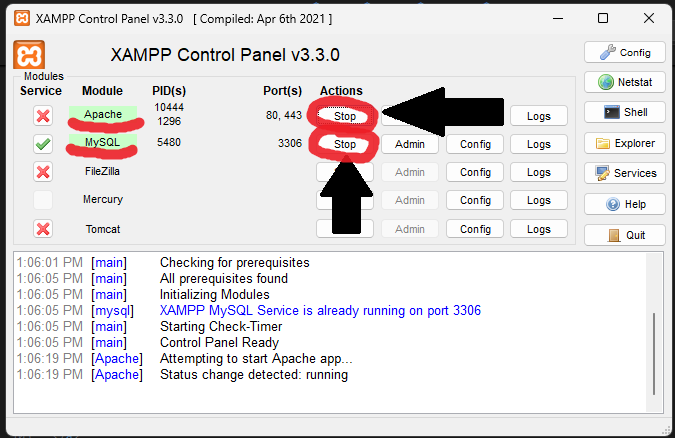

Cómo abrir el proyecto
Guía de instalación local
Paso 2
Iniciar Apache y MySQL desde el panel de XAMPP

Paso 3
Descargar la carpeta del proyecto desde Google Drive y pegarla dentro de:
Disco:/xampp/htdocs
👉 Descargar proyecto
Paso 4
Descargar la base de datos e importarla en phpMyAdmin
👉 Descargar base de datos
Luego abrir http://localhost/phpmyadmin y seguir estos pasos:

1️⃣ Entrar en la pestaña Importar
2️⃣ Seleccionar el archivo .sql descargado
3️⃣ Presionar Continuar
Paso 5
¡Todo listo! 🎉
Ahora abrí tu navegador y escribí:
http://localhost/proyecto